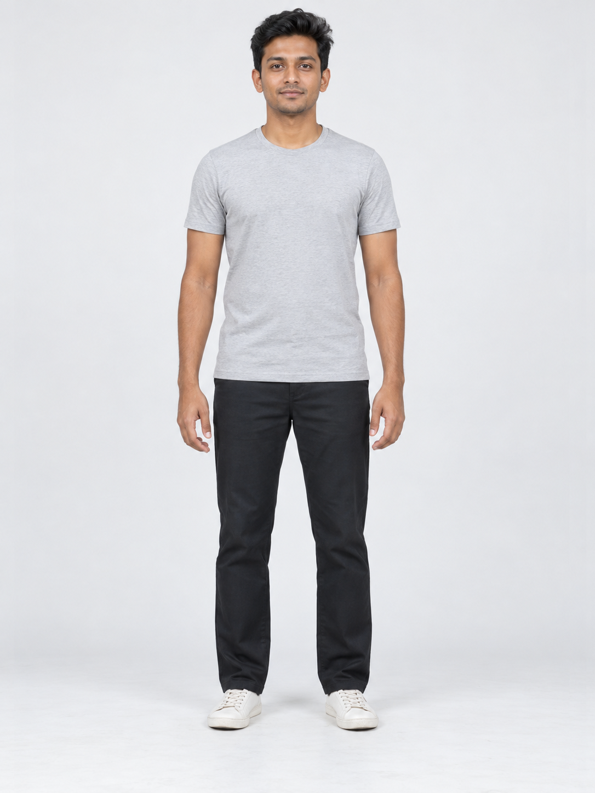
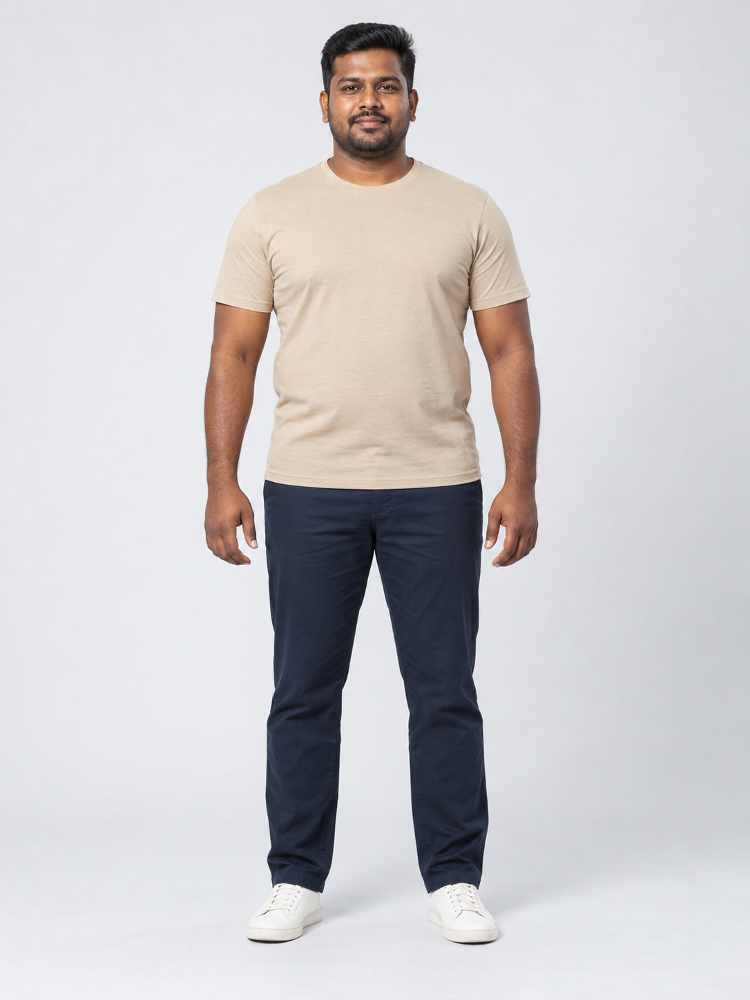
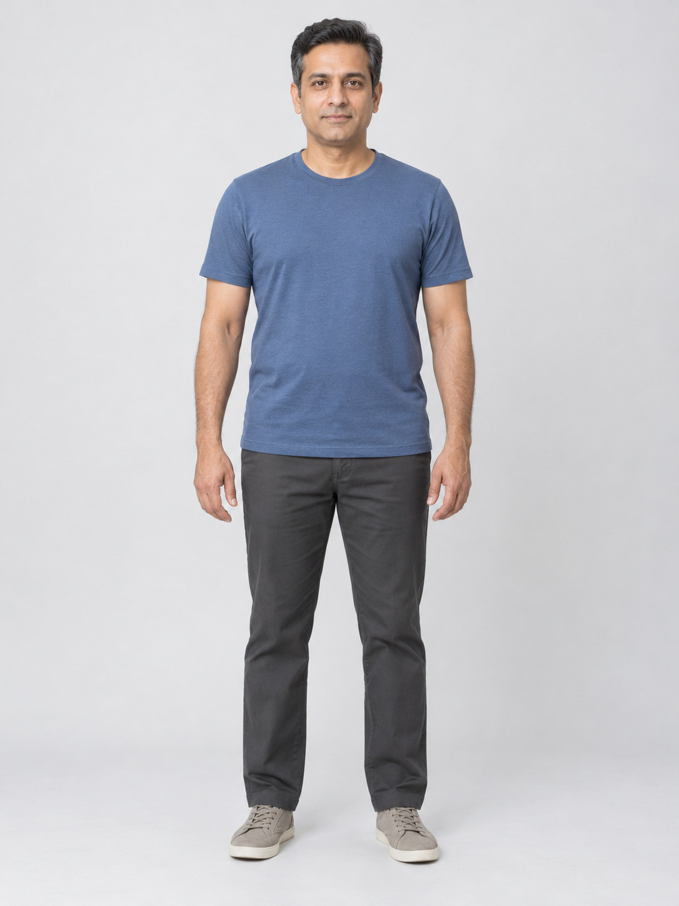
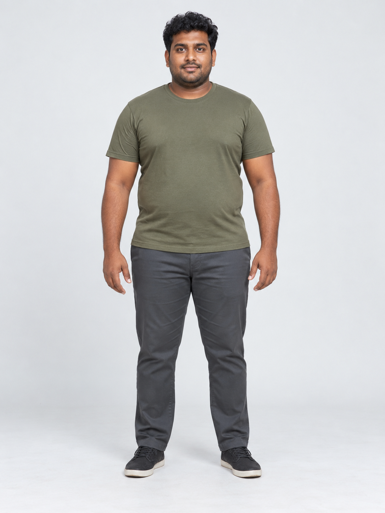
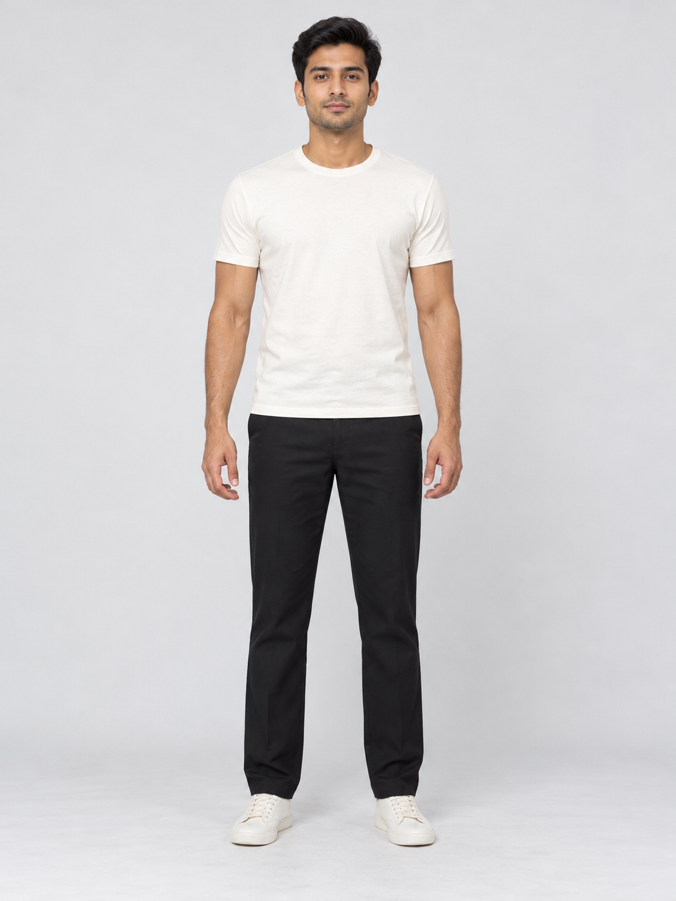
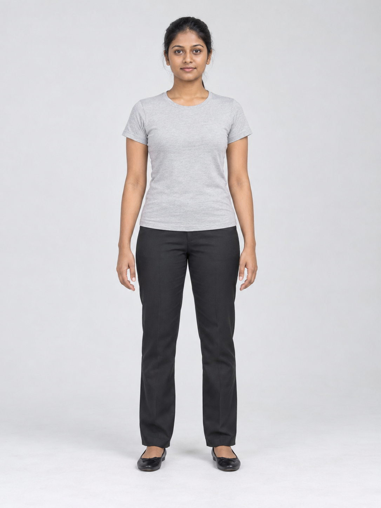
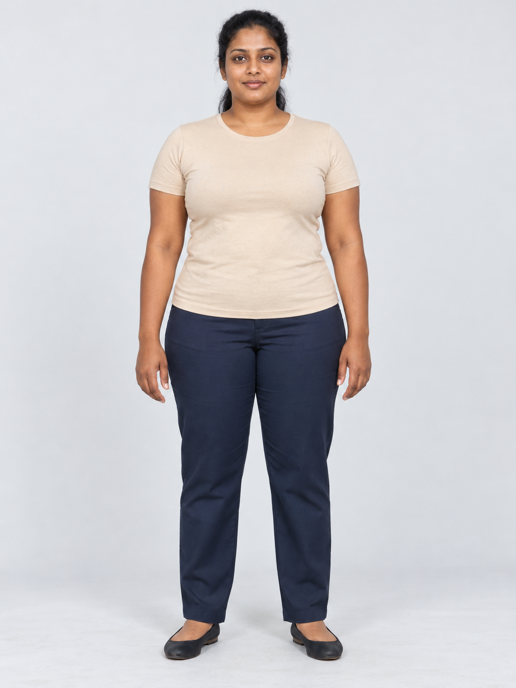
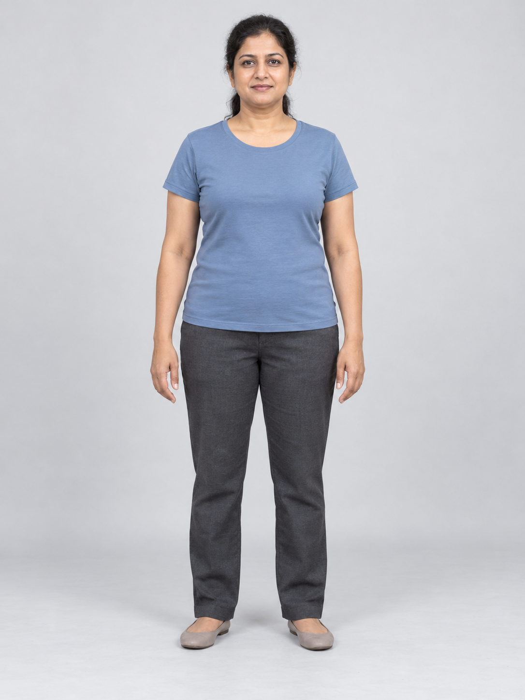
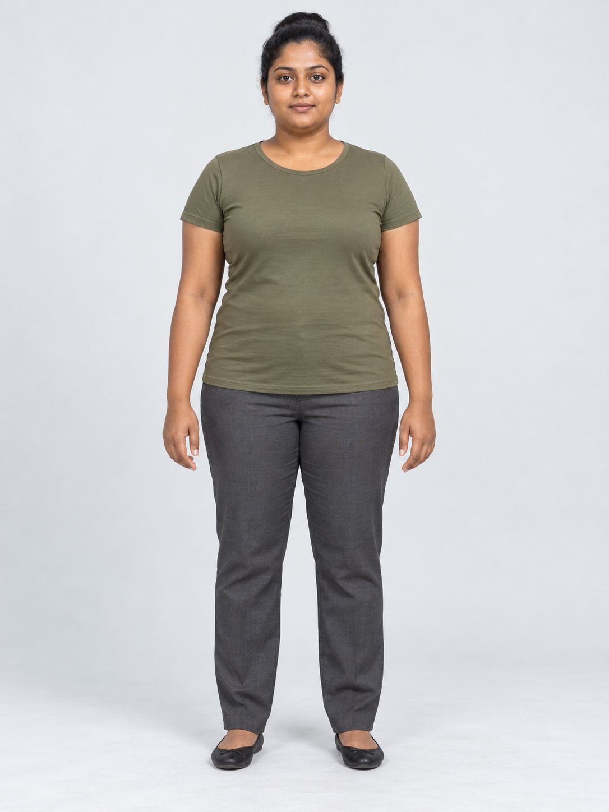
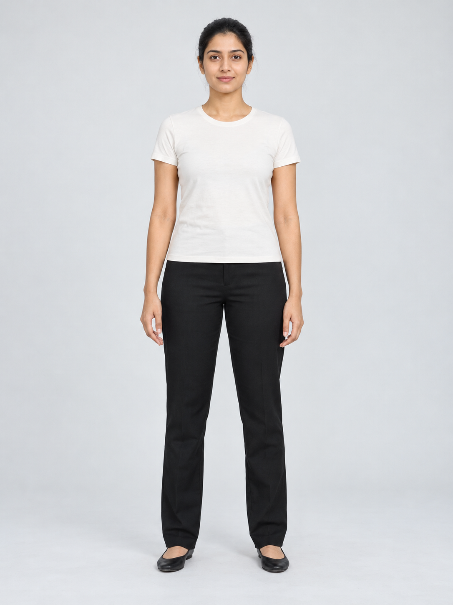

Five male and five female fictional adult portraits for virtual try-on demonstrations. Click to open full-resolution PNGs.










Upload a PNG as Person photo in the local app. These are synthetic inputs, not real participants, verified demographic labels, or matching ground-truth try-on pairs.